Как один монах расколол церковь
Это твой урок по §5 и §6. Сначала разберём два слова из §5, потом пять вопросов из §6. Здесь много картин тех времён: так ты увидишь людей, о которых идёт речь, в лицо. В конце каждого вопроса есть жёлтый блок «Как ответить у доски». Это готовый устный ответ, перескажи его своими словами, и всё получится.
Абсолютизм и сословия
Проще: король как директор школы, у которого нет ни завуча, ни родительского комитета. Решает только он.
Самый известный абсолютный монарх — французский король Людовик XIV, «король-солнце». Он правил 72 года, и ему приписывают фразу «Государство — это я».
На что опирается абсолютный монарх: постоянная армия, множество чиновников, единые налоги по всей стране, поддержка дворян и церкви.
Посмотри на портрет: мантия с лилиями (знак французских королей), корона, скипетр, меч. Художник специально показал, что вся власть здесь, в одних руках.
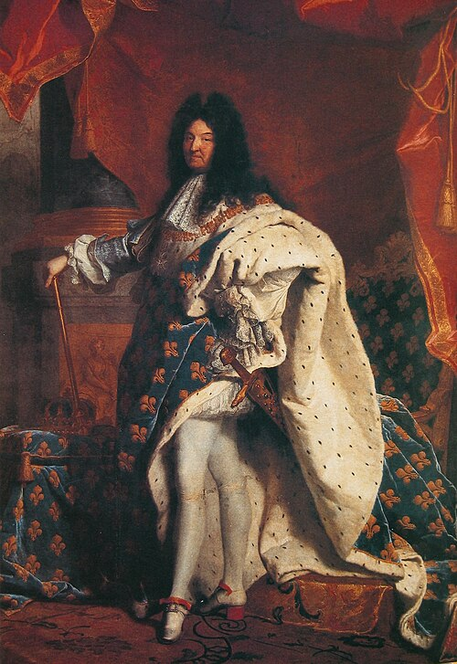
А вот как три сословия рисовали сами люди Средневековья. Это миниатюра, маленькая картинка внутри заглавной буквы в рукописной книге XIII века.
Найди всех троих: слева священник (молится за всех), в центре рыцарь в шлеме и со щитом (защищает всех), справа крестьянин с лопатой (кормит всех). Каждый занят своим делом и передаёт его детям.
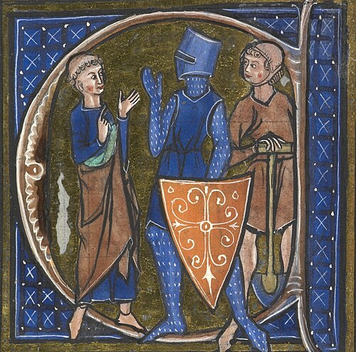
Как ответить у доски
Абсолютизм — это неограниченная власть монарха: он сам издаёт законы, собирает налоги, командует армией, опирается на чиновников и может не созывать парламент. Сословия — это группы людей с правами и обязанностями, которые закреплены законом и передаются по наследству. Их три: духовенство, дворянство и третье сословие (крестьяне и горожане). Налоги платило только третье сословие.
Что такое Реформация и Контрреформация
Откуда слово «протестанты»? В 1529 году князья-сторонники Лютера заявили протест против решения императора запретить новое учение. С тех пор их и называют протестантами.
Чем боролась Контрреформация:
Инквизиция
Церковный суд. Искал и жестоко наказывал «еретиков», то есть несогласных.
Индекс запрещённых книг
Список книг, которые католикам нельзя читать. Их изымали и сжигали.
Орден иезуитов
Основал Игнатий Лойола. «Солдаты папы»: открывали школы, проповедовали, дисциплина как в армии.
Тридентский собор
1545–1563. Подтвердил: папа главный, таинства и святые нужны. Навёл порядок среди священников.
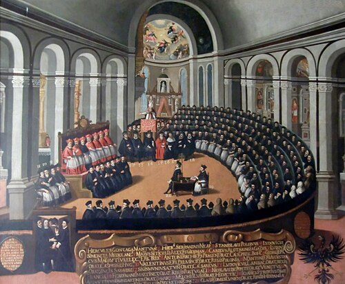
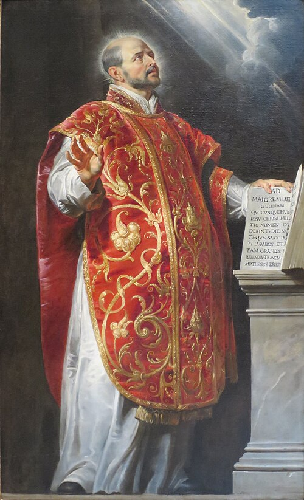

Как ответить у доски
Реформация — это движение в XVI веке за преобразование католической церкви. Оно началось в Германии в 1517 году с выступления Мартина Лютера, и в результате появились протестантские церкви: лютеранская, кальвинистская и другие. Контрреформация — это борьба католической церкви против Реформации. Для неё усилили инквизицию, составили Индекс запрещённых книг, создали орден иезуитов, а Тридентский собор подтвердил главенство папы.
Причины Реформации
Коротко: церковь стала очень богатой и жадной, а люди стали грамотнее и начали это замечать.
Самым известным продавцом индульгенций был монах Иоганн Тецель. Именно из-за него Лютер и написал свои тезисы.
Посмотри на картину: Тецель сидит за столом и выписывает индульгенции, за ним монах держит крест. Люди толпятся, чтобы заплатить, а девушки справа смотрят с сомнением.
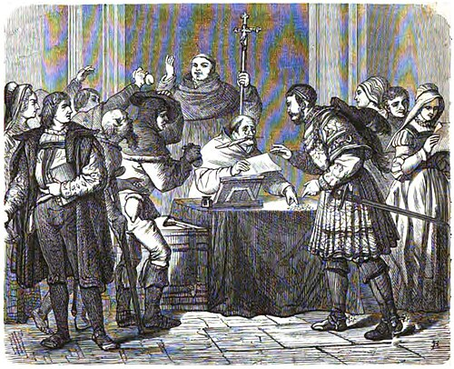
Жадность церкви
Продажа индульгенций и церковных должностей, десятина (десятая часть урожая церкви), огромные земли у монастырей.
Плохие священники
Многие священники жили в роскоши и нарушали то, чему сами учили. Некоторые были почти неграмотными.
Непонятная Библия
Службы и Библия были на латыни. Простые люди не понимали, что там написано, и верили священнику на слово.
Книгопечатание и гуманизм
Книги подешевели, люди стали читать и думать сами. Критика церкви быстро расходилась по стране.
Почему книгопечатание так важно? Раньше каждую книгу переписывали от руки месяцами. Когда Иоганн Гутенберг около 1450 года изобрёл печатный станок, за день стали печатать сотни страниц.
Это как интернет того времени: листовки с идеями Лютера за считанные недели разлетелись по всей Германии, и заставить всех замолчать церковь уже не могла.
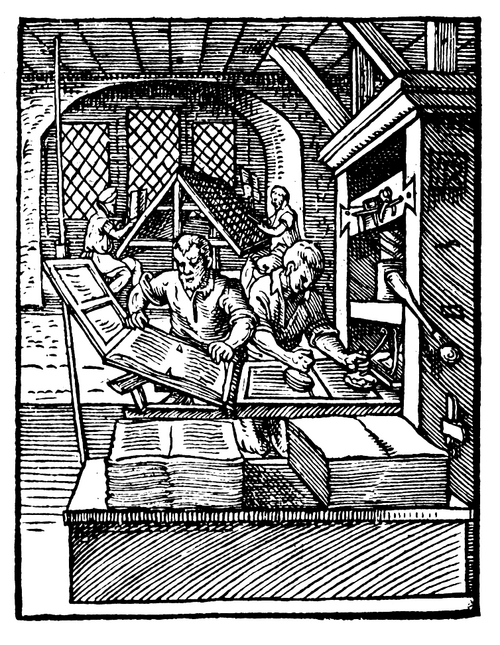
Кто чего хотел от Реформации (это частый вопрос):
- Князья и короли: забрать себе богатые церковные земли и не зависеть от папы.
- Горожане: «дешёвую церковь» без лишних поборов.
- Крестьяне: облегчить повинности и налоги.
Как ответить у доски
Первая причина — богатство и жадность католической церкви: она продавала индульгенции и должности, собирала десятину, владела огромными землями. Вторая — поведение духовенства: многие священники жили в роскоши и грешили. Третья — Библия и службы на латыни, непонятной народу. Четвёртая — книгопечатание и гуманизм: люди стали грамотнее и начали критиковать церковь. Кроме того, князья хотели забрать церковные земли, горожане хотели дешёвую церковь, а крестьяне — меньше повинностей.
Мартин Лютер и его идеи
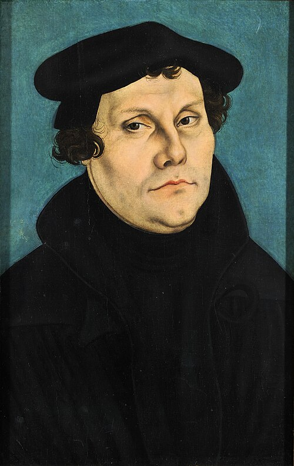
Мартин Лютер
- Кто он
- Монах и профессор богословия (науки о Боге) в университете города Виттенберг
- Чем знаменит
- Начал Реформацию, перевёл Библию на немецкий язык
- Последователи
- Лютеране
Этот портрет написал друг Лютера, художник Кранах. Он нарисовал Лютера много раз, и благодаря этим портретам всю Европу облетело его лицо: простая чёрная одежда, никакой роскоши.
По преданию, 31 октября 1517 года Лютер прибил к двери церкви 95 тезисов (коротких утверждений) против продажи индульгенций. Этот день считается началом Реформации. Благодаря книгопечатанию тезисы за несколько недель узнала вся Германия.
- Когда Христос сказал «покайтесь», он хотел, чтобы вся жизнь верующего была покаянием, а не разовой покупкой.
- Кто искренне раскаялся, получает прощение и без индульгенции.
- Лгут те, кто учит, что душа вылетает из чистилища, едва звякнет монета.
- Лучше отдать деньги бедному, чем купить индульгенцию.
- Папа богаче всех богачей, так почему бы ему не построить собор на свои деньги, а не на деньги бедняков?
Так эту сцену представил художник через 350 лет. Лютер в монашеской рясе прибивает лист молотком, а горожане рядом читают и обсуждают.
Запомни дату: 31 октября 1517. В Германии этот день до сих пор отмечают как День Реформации.
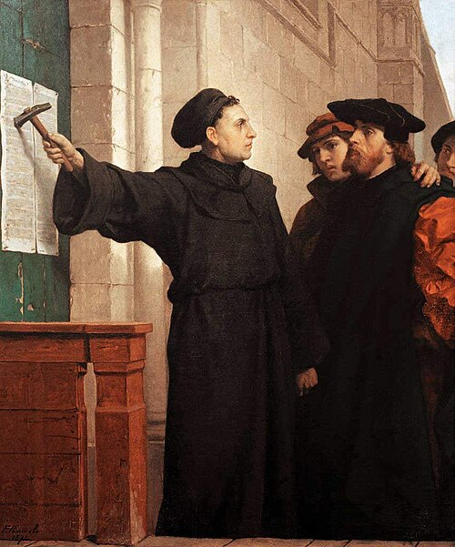
Главные идеи Лютера
Спасение верой
Человек спасается искренней верой в Бога, а не покупкой индульгенций. Поэтому индульгенции не нужны.
Только Библия
Главный авторитет — Священное Писание, а не указы папы. Чего нет в Библии, то не обязательно.
Без посредников
Человек может обращаться к Богу сам. Роскошная церковь и власть папы не нужны.
Дешёвая церковь
Простая служба на родном языке. Нет монастырей, почитания святых и икон, из семи таинств оставлены два: крещение и причастие.
Что было дальше:
- 1520: папа грозит Лютеру отлучением, Лютер при народе сжигает папскую грамоту (буллу).
- 1521: император Карл V вызывает его на собрание в Вормсе и требует отречься. Лютер отвечает: «На том стою и не могу иначе».
- Его объявляют вне закона. Лютера прячет князь Фридрих Мудрый в замке Вартбург, и там он переводит Библию на немецкий язык.
- 1525: Лютер выступил против восставших крестьян и призвал князей их подавить. Он хотел мирных перемен, а не бунта.
- 1555: Аугсбургский мир. Принцип «Чья власть, того и вера»: князь выбирает веру, подданные следуют за ним.
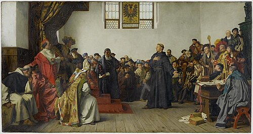
Почему перевод Библии так важен? До Лютера Библию читали на латыни, и её понимали только священники и учёные. Лютер перевёл её на немецкий язык. Теперь любой грамотный немец мог сам прочитать, что там написано, и проверить, правду ли говорят священники.
Посмотри на титульный лист: крупно «Biblia», ниже имя «Mart. Luth.» и город «Wittemberg». Полную Библию на немецком напечатали в 1534 году.
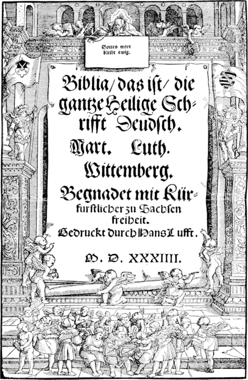
Как ответить у доски
Мартин Лютер — немецкий монах и профессор богословия из Виттенберга. В 1517 году он выступил с 95 тезисами против продажи индульгенций, и с этого началась Реформация. Он учил, что человек спасается верой, а не покупкой индульгенций; что главный авторитет — Библия, а не папа; что человек может обращаться к Богу без посредников, а церковь должна быть простой и дешёвой. Лютер сжёг папскую буллу, отказался отречься перед императором и перевёл Библию на немецкий язык. Его последователей называют лютеранами. Народное восстание он не поддержал.
Томас Мюнцер и его идеи
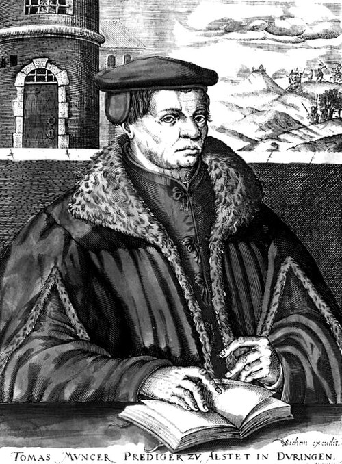
Томас Мюнцер
- Кто он
- Священник и проповедник, сначала сторонник Лютера, потом его противник
- Чем знаменит
- Вождь восставших крестьян в Крестьянской войне
- Главное отличие
- Лютер хотел изменить только церковь, а Мюнцер — всю жизнь общества
Внизу гравюры подпись по-старонемецки: «Томас Мюнцер, проповедник в Альштедте в Тюрингии». А на заднем плане справа художник нарисовал битву: так он напомнил, чем закончилась жизнь Мюнцера.
Идеи Мюнцера:
- Построить «Царство Божие на земле» прямо сейчас, а не ждать рая после смерти.
- В этом царстве нет богатых и бедных, нет угнетателей, нет частной собственности: всё общее, все равны.
- Добиться этого нужно силой: народ должен восстать против князей и богачей.
Судьба: Мюнцер стал одним из вождей Крестьянской войны в Германии (1524–1525). В 1525 году восставших разбили у города Франкенхаузен, Мюнцера схватили и казнили.
Посмотри на картину: перед битвой в небе появилась радуга. Мюнцер указал на неё и сказал крестьянам, что это знак: Бог на их стороне. Радуга и так была на его знамени. Но крестьяне с косами и вилами не устояли против княжеского войска.
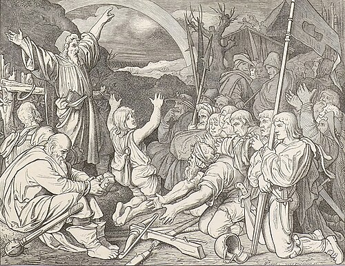
Как ответить у доски
Томас Мюнцер — священник, сначала сторонник Лютера, затем его противник. Он считал, что менять нужно не только церковь, но и всё общество: построить «Царство Божие на земле», где нет богатых и бедных, нет частной собственности, все равны и всё общее. Добиваться этого он предлагал силой, через народное восстание. Мюнцер возглавил крестьян в Крестьянской войне 1524–1525 годов, восставшие были разбиты, а сам он казнён.
Кальвинизм

Жан Кальвин
- Кто он
- Богослов и проповедник в швейцарском городе Женева
- Чем знаменит
- Создал учение, ещё более строгое, чем у Лютера
- Последователи
- Кальвинисты (во Франции — гугеноты, в Англии — пуритане)
Сравни с портретом Людовика XIV из §5: там шелка и золото, здесь простая тёмная одежда, чёрная шапочка и строгое лицо. Вверху по-латыни написано имя: «Иоаннес Кальвинус». Кальвин и одеждой показывал то, чему учил.
Строгая жизнь
Осуждали роскошь, танцы, театр, азартные игры, нарядную одежду. В Женеве за этим следили очень строго, Кальвина даже прозвали «женевским папой».
Церковь без епископов
Общиной руководят выборные старейшины (пресвитеры) и проповедники. В храмах нет икон, статуй и пышности.
Где распространился
Нидерланды, Шотландия, Англия (пуритане), Франция (гугеноты).
Кому понравился
Купцам, ремесленникам, предпринимателям (буржуазии): богатство, заработанное трудом, считалось делом угодным Богу.
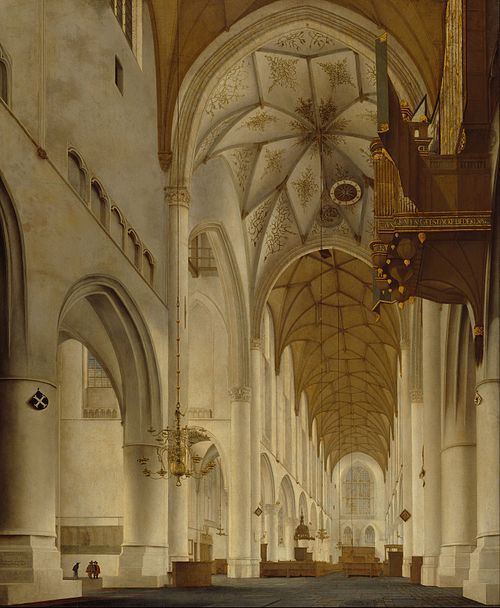
Как отличить кальвинистскую церковь от католической?
Вспомни картину с Тридентским собором: там роспись, золото, кардиналы в красном. А здесь пусто и светло. Кальвинисты убрали из храмов всё, что, по их мнению, отвлекает от Бога. Главное в такой церкви — проповедь и Библия.
Это и есть «простая» и «дешёвая» церковь, о которой мечтали Лютер и Кальвин.
Как ответить у доски
Кальвинизм — это учение Жана Кальвина, который проповедовал в Женеве. Главная его идея — предопределение: Бог заранее решил, кто спасётся. Признаками избранности считались трудолюбие, успех в делах, честность и бережливость. Кальвинисты осуждали роскошь и развлечения, их церковь была простой, без епископов, общиной управляли выборные старейшины. Кальвинизм понравился буржуазии и распространился в Нидерландах, Англии (пуритане), Шотландии и Франции (гугеноты).
Всё на одной таблице
| Католики | Лютер | Мюнцер | Кальвин | |
|---|---|---|---|---|
| Как спастись | Вера + добрые дела + таинства (и индульгенции) | Верой | Построить справедливое общество | Бог уже решил (предопределение) |
| Главный авторитет | Папа и церковь | Библия | Библия и «внутреннее откровение» | Библия |
| Церковь | Богатая, пышная, на латыни | Дешёвая, на родном языке | Народная | Строгая, без епископов, выборные старейшины |
| Как менять | Ничего не менять | Мирно, с князьями | Восстанием | Строгой дисциплиной |
Нажми на карточку, чтобы увидеть ответ
Сначала ответь вслух сама, потом проверь. Если ответила на все 9 — ты готова.